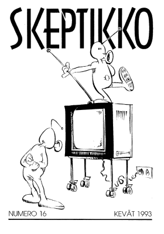
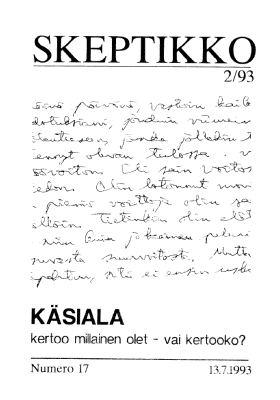
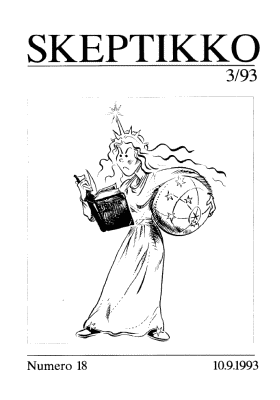
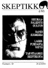
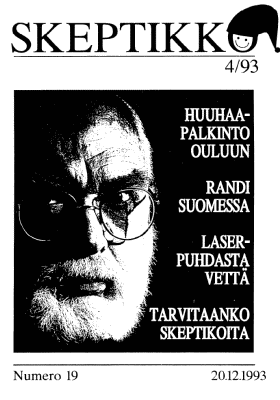

Skeptikko-lehti 1993
Ellei sinulla jo ole tietokoneellasi pdf-muodossa olevan tiedoston lukemiseen tarvittavaa
Acrobat Reader -ohjelmaa, saat sen ladattua maksutta tästä kuvakkeesta:

Skeptikko on Skepsis ry:n neljä kertaa vuodessa ilmestyvä jäsenlehti. Tästä verkkoversiosta löydät koko lehden sisällön PDF-muodossa.
 Skeptikko 16, 1/1993
- Karlo Kauko: Pääkirjoitus: Mihin hukkui huuhaa-palkinto
- Jukka-Pekka Puro: Mediameedio luo oppinsa tiedotusvälineiden fantasioista
- Matti Virtanen: Ufotutkimus löytyi
- Raportti Kallaveden ”ufonkappaleen esitutkinnasta”
- Pekka Roponen: Ufoja etsimässä Heurekassa
- Ilpo V. Salmo: Faaraon kirous
- Veli Toukomies: Ihmeen ihmettelyä
- Lyhyesti
- Homeopatialaki menossa eduskuntaan
- Geller vastaan Randi
- Euroskeptikot Britanniaan elokuussa
- Skeptikko uudistuu
- Keskustelua
- Erkki Nykänen: Väärä ja vähemmän väärä. Huomautuksia Isaac Asimovin kirjoituksen johdosta
- Veijo Saano: Kiinalainen juttu
- Jukka Piironen: Ufoja ja todennäköisyyksiä
- Skepsiksen vuosikokous
 Skeptikko 17, 2/1993
- Karlo Kauko: Nostradamuksen tulkit
- Marketta Ollikainen: S. Albert Kivinen: Olemattomiakin voi tutkia
- Susan Blackmore: Charles Honortonin perintö
- Tutkijat kiinnostuivat Honortonin kokeesta
- Lääkelain uudistus eduskunnassa
- Marja Airaksinen ja Veijo Saano: Lääkkeet ja luontaistuotteet – paha sekaannus ja yhä pahenee
- Massimo Polidoro: Kun ”psyykikkoa” testattiin Italian televisiossa
- Grafologiaa ja ufoja. Skepsis kysyy, ”asiantuntijat” vastaavat
- Marketta Ollikainen: Käsiala kertoo millainen olet, vai kertooko?
- Lauri Gröhn: Ufo-paneeli Oulun Tietomaassa
- Rauni Kaskinen: Nyt ennustamaan! Neuvomme kuinka jokainen skeptikko pääsee tekemään paikkansapitäviä ennustuksia
- Tulevia tapahtumia
- Keskustelua
- Kirjat
 Skeptikko 18, 3/1993
- Jouko Aho: Eino Kailan hämärä nurkka
- Marketta Ollikainen: Mihin Suomi uskoo?
- ”Tyhmät skeptikot”
- Kalevi Kuitunen: Valemuistoja aiemmista elämistä
- YK ei uskonut ufoihin
- Veli Toukomies: Kuviteltuja pikkuihmeitä tai aitoja isoja ihmeitä?
- Marketta Ollikainen: Urantia-mysteeri
- Skeptikkojen kesäretki
- Martin Gardner: Kvasimuistisyndrooma
- FMS-terapiaa voidaan harjoittaa myös Suomessa
- Skeptical Inquirer
- Skeptikon kirjahylly
- Tulevia Tapahtumia
- Keskustelua
- Kirjat
  Skeptikko 19, 4/1993
- Huuhaa-palkinto Oulun tiedekeskus Tietomaalle
- Lauri Gröhn: Potentiaalisia Huuhaa-palkintoehdokkaita
- Veijo Saano: Euroskeptikot Britanniassa
- Veijo Saano: Skeptikoista vaihtoehtolääkintään
- Toimitukselta
- Marketta Ollikainen: Surkeita amatöörejä, sanoo Randi venäläisistä
- Matti Jokinen: Laserpuhdasta vettä
- Tarvitaanko skeptikoita?
- Hengestä tietoa – tiedosta henkeö! Hengen ja tiedon messut
- Lyhyesti
- Skeptikon numeroissa 1–19 julkaistut artikkelit
- Lauri Gröhn: Skeptikon kysymyspakki
- Hannu Karttunen: Vaarallista peliä
- Keskustelua
- Kirjat
Kaikkien artikkelien © Copyright 1993 Skeptikko-lehti ja kirjoittaja.
Kirjoitukset vapaasti siteerattavissa ja levitettävissä ei-kaupallisiin tarkoituksiin, lähteeksi mainittava kirjoittajan lisäksi Skeptikko-lehti numeroineen.


{kind=link}
{kind=link}
{kind=link}
{kind=link}